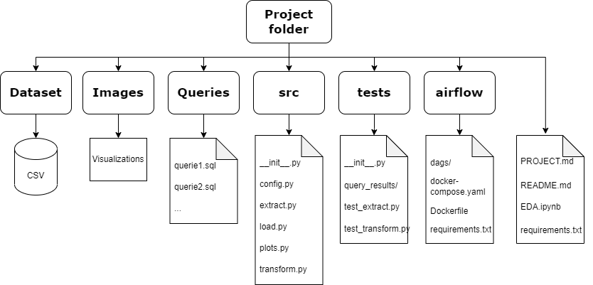
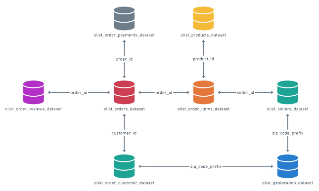

E-Commerce Data Pipeline
The E-Commerce Data Pipeline project was a comprehensive data engineering and analysis effort aimed at extracting, transforming, and visualizing data from multiple sources to provide valuable insights for a leading Latam E-commerce platform. The project encompassed five main phases: Extract, Load, Transform, Visualize, and Data Orchestration with Apache Airflow. Each phase presented unique challenges that required creative solutions and technical expertise. Some of the challenges faced where:
- Data Extraction Complexity: The project involved extracting data from various sources, including CSV files and a public API. Ensuring the accurate extraction of data while maintaining data integrity was a significant challenge. Proper validation and handling of data discrepancies were crucial.
- Data Transformation: The data transformation phase required creating complex SQL queries to derive meaningful insights. The challenge here was to optimize query performance and accuracy, especially when dealing with large datasets. Ensuring the queries met the project requirements and generating expected results was essential.
- Data Visualization: The project required creating informative visualizations to present insights effectively. The challenge was to choose the right visualizations to convey the data story clearly. Ensuring that the Jupyter notebook (EDA.ipynb) contained interactive and insightful visualizations added complexity.
- Data Warehouse Choice: While SQLite was chosen as the database engine for simplicity, dealing with larger datasets in a real-world scenario might require more scalable options like Snowflake. Decisions about data warehousing needed to be considered with future scalability in mind.
- Airflow Integration: Implementing data orchestration with Apache Airflow was a pivotal step. The challenge was to create a reliable and automated workflow that ensured data updates and report generation at regular intervals. Developing the Airflow DAG (elt_sprin1_dag.py) and ensuring its seamless integration with the project files was crucial.
- Project Documentation: Managing a project of this complexity required well-structured documentation. Ensuring that team members and stakeholders could easily understand the project structure, component roles, and dependencies was essential for smooth collaboration.
- Testing with Pytest: The project required robust testing using Pytest (tests/test_extract.py and tests/test_transform.py) to validate data extraction and transformation functions. Creating comprehensive test cases that covered various scenarios and edge cases was challenging but vital for ensuring data pipeline reliability, even as datasets and code evolved.
Folder Architecture
Data Structure
Here I compiled all the ETL python files and all the queries into a single Jupyter Notebook
To access the full project, please visit my GitHub repository
In this repository, you will find the ETL written in Python, the SQL queries, the plots created with Matplotlib and Seaborn, the tests using Pytest, and the Airflow orchestration, which includes the DAG creation and the Docker container.Git Hub
Technologies:
- Pandas
- Numpy
- Apache Airflow
- Docker
- SQL
- SQLite
- Matplotlib and Seaborn
- pytest
- DBeaver